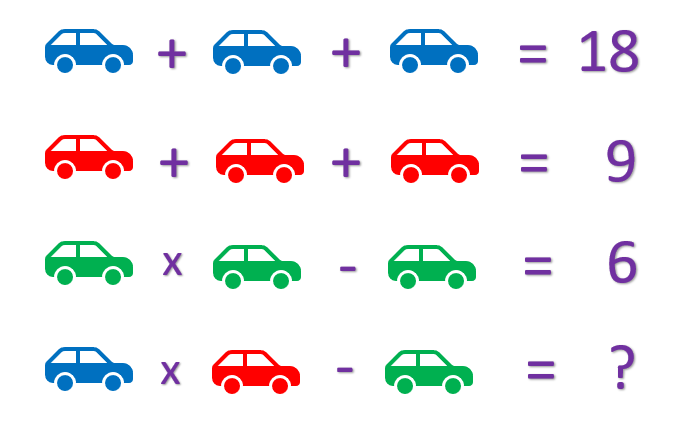
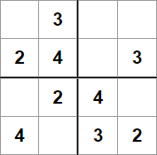

11 It’s puzzle time
If we’ve been through the previous part, we can keep using the same file. Or we can use 7-amb.rkt as our starting point.
Now that we have our great evaluator with amb and require, let us see what it can do!
11.1 Find the missing number

Do you ever see pictures like this one in your social media feeds? Well, now you have a language to solve them for you.
Write a program in our new language that solves this puzzle by the use amb to define possible values 1 - 9 for the car colors, and require to define the restrictions.
What happens if you allow the green car to also have the value -2?
11.2 Find the digits

Find the digits symbolized by the blue, red and white circles that fits into the calculation.
11.3 Sudoku

Our evaluator can also solve sudokus!
The easiest way is to require that the sums vertically, horizontally and inside each square are equal to 10. But then we might get more than one solution and manually select the one that follows the rules, because we have not incorporated the rule that the digits in same row, column or square should be distinct.
If we want to do it properly our program has to define a function that takes a list and decides if the elements in the list are unique. One way to do that would be to loop through the list and check if the first element is contained in the rest of the list, if it is, the elements are not unique, otherwise call the function with the rest of the list. (This function will also be useful for solving the Zebra puzzle).
The sudoku in the picture is from minisudoku.com. There are more sudokus there, and you can check your solution.
11.4 Done?
Towards zebras, then.